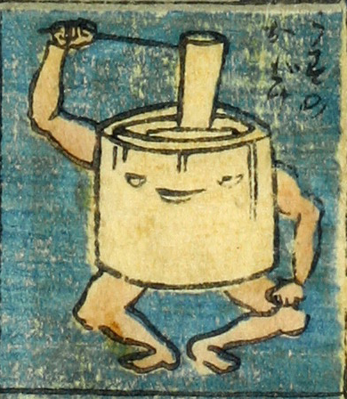

臼；ウス

臼のお化け。臼に目と口がついている。腕と脚が生えており、右腕で杵を持って、臼の中のものを搗いているように見える。
著作者：芳盛／出典：親書誌：U426_nichibunken_0073：しん板化物尽し；シンパンバケモノヅクシ／日付：2006／資源識別子：U426_nichibunken_0073_0030_0000
Copyright (c)2010- International Research Center for Japanese Studies, Kyoto, Japan. All rights reserved.